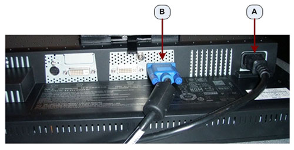
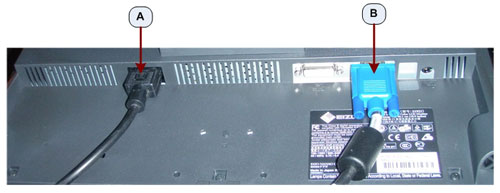

| NOTE: | Do not use OEM Manufacturer’s supplied video cables. |
Illustration 1: NEC 1990SXi LCD Display (Image & Scan) Monitor Video Input

Table 1: Monitor Connections
| A | Power Cable Connection |
| B | SVGA Video Connection - Display / Image Monitor (right) |
Illustration 2: EIZO S1921-X LCD Display (Image & Scan) Monitor Video Input
